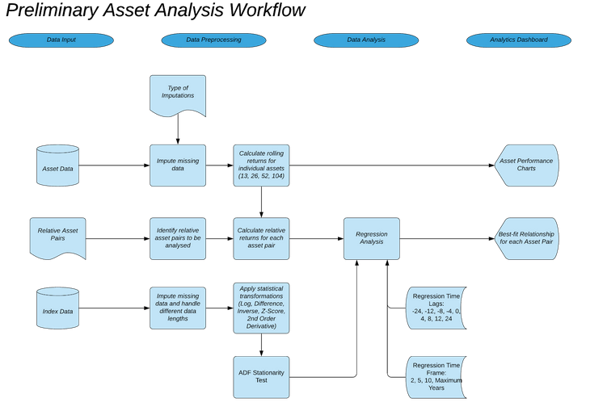
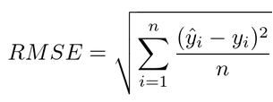

Summary
The application provides the client with a robust analytics web application that processes and analyzes returns of assets obtained from Bloomberg and provides insights for maangers to construct and optimize their portfolio. Code and client name not provided for confidentiality
Features include Asset Analysis, Regression Analysis, Asset clustering and Portfolio Optimization
Methodology
Regression Analysis
The main output of the regression analysis is to identify the indicator which has the best relationship with a user-defined relative asset pair. 
After the user uploads the files, the system will cycle through multiple transformations and combinations of the assets and indicators, which is detailed in the tables below:
| Asset Transformations | |
|---|---|
| Rolling Return Period | 13,26,52,104 weeks |
| Moving Average Window | 4 weeks |
| Indicator Transformations | |
|---|---|
| Statistical Transformations | Untransformed, Log, Inverse, Z-Score, Difference, 2nd Order Derivative |
| Moving Average Window | 4 weeks |
After the statistical transformations are completed for each indicator, a stationarity check is conducted using the Augmented Dickey-Fuller Test. If a transformation is found to be non-stationary, it will be dropped from the analysis.
The regression is then run on the above variables with different analysis parameters, namely:
| Parameters | Explanation | |
|---|---|---|
| Time Lag | Measured in weeks: 0, 4, 8, 12,24 -4, -8, -12, -24 |
Negative time lags refer t oassets being the leading variable and indicators being the lagging variable, while positive time lags reer to the opposite |
| Time Period | Measured in Years: 2, 5, 10, Maximum | -Maximum period: refers to full non-NA history for the particular relative asset
or indicator pair of interest - if assets have histories shorter than required, they would be excluded from the analysis combinations Eg: if Asset A has 7 years worth of history, it would be analysed for periods of 2, 5 and maximum period - where maximum would be 7 years in this case |
The metric used in evaluating the fit of the regression line is Root Mean Square Error (RMSE). The calculation formula used is :  where ŷ is the predicted value and y is the actual value of the dependent variable, which is the returns of the relative asset pair in this case. The rationale for using this metric is that it shows the absolute fit of the regression line to the variables, and also shows how accurately the regression line predicts the returns of the relative asset. This would allow us to understand how significant this relationship can be while expanding changes in the relative asset returns in the future.
Cluster Analysis


For the clustering metric, we used a Path Similarity Analysis (PSA) metric, Hausdorff distance. It is the distance between A and B with the smallest positive number r, such that every point of A is within distance r of some point of B, and every point of B is within distance r of some point of A. In other words, it is the greatest of all the distances from a point in one set to the closest point in the other set.
For the clustering method, we used Hierarchical clustering. Hieracrchial clustering starts with all the data points assigned to a cluster of their own. The two nearest clusters are then merged into the same cluster. In the end, this algorithm terminates when there is only a single cluster let.
In the application, users are able to select the specific rolling window to apply the clustering algorithm on. Upon selecting the rolling window, a dendrogram will be created to show the hierarchical clustering of the data. Based on the dendrogram, users are able to view the clusters at different distances. A drop down list of distances will be created for users to select where they would like to cut the dendrogram at, obtaining the number of clusters at the respective selected distance. Upon selecting the distance level to cluster the data at, a new dendrogram will be displayed to show the distance at which the user selected to cluster the data at. The lines of the assets are then coloured based on the clusters that they belong to. The respective clusters will be returned in a tabular format, showing which assets belong to which cluster. On top of that, an asset network node graph will be displayed based on the clustering. The assets are coloured (same colours as the dendrogram) according to their clusters. The network asset graph shows the distance among the assets, allowing users to better visualise the relationship among the assets and at the same time, view which clusters they belong to. For now, a threshold of 0.15 is being set to avoid an overcrowded network asset graph. With the above information, users are able to choose what assets they would like to place in the same portfolio based on how different they are by viewing which clusters they are in and how much they differ from the clusters or other assets (based on the distance) to derive a diversified portfolio.

Application is built using flask, html, css and Javascript. Additional features include error handling, cron job and automated data removal